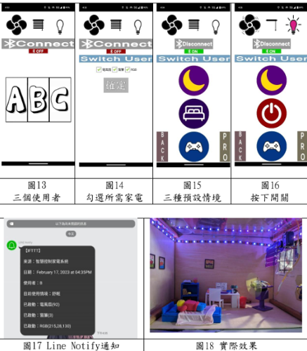
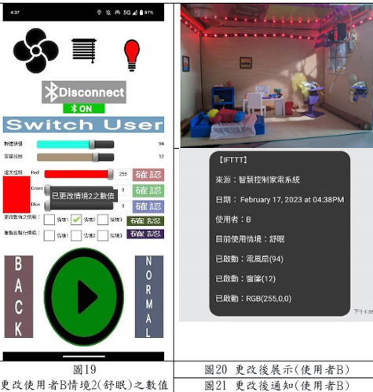
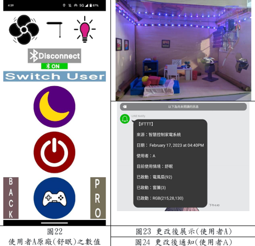
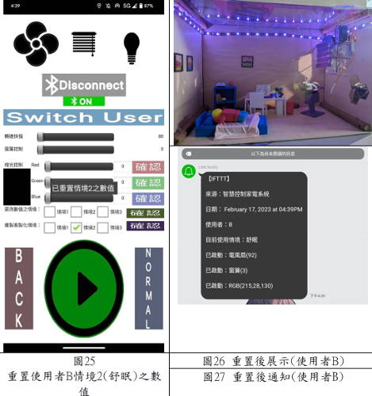

一鍵控制
開啟App後，可點選要使用的使用者（圖13），點選後即可勾選所需 (家電並按下確認鍵（圖14），會有三種預設情境可自由挑選（圖15）。例： 按下情境2舒眠(如圖16)，將會收到即時通知(圖17)，以及最後的成品(圖 18)。
自定義情境數值
倘若對於預設情境不夠滿意之使用者，可由normal介面跳轉至pro介 面。(如圖15之右下角)調整好所想要之數值後，並勾選需要更改之情境， 按下右側確認鍵後，系統將跳出訊息通知（圖19）。同時回到normal介 面做啟動(點選圖19之右下角)，將會看到成品(圖20)以及即時通知(可參 照圖17與圖21對比)。
更改使用者
一個裝置至多可有3名使用者進行切換，每位使用者都有獨立的資料 庫，不會互相影響。例：使用者A使用電風扇、窗簾及RGB的組合，同時 選擇情境2舒眠，除了成品(如圖23)外還能看到即時通知上的標示(可參照 圖21與圖24對比)。
重置情境數值
倘若想恢復重置數值，可以勾選需要重置之情境(圖25)，並按下確 認鍵，即可重置回預設值。同時，回到normal介面並啟動後，將可看到 成品(圖26)及即時通知(圖27)。例：使用者B以自定義數值後(如圖21所 示)，重置數值後，即可重置回預設值(可參照圖17與圖27對比)。
